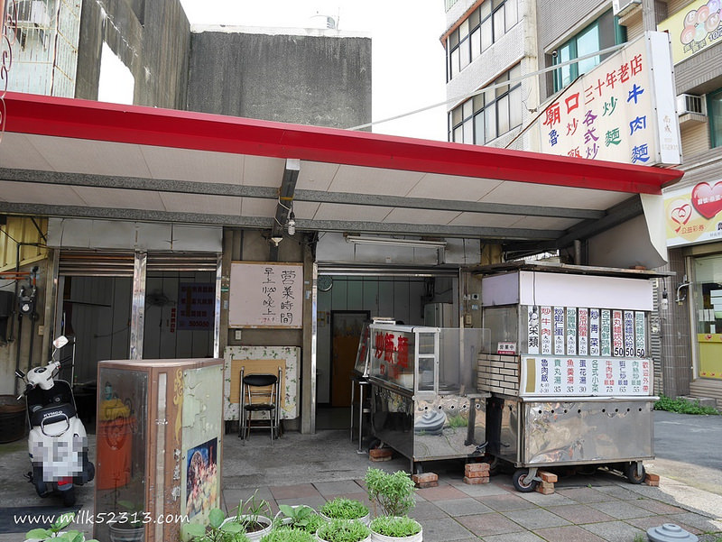
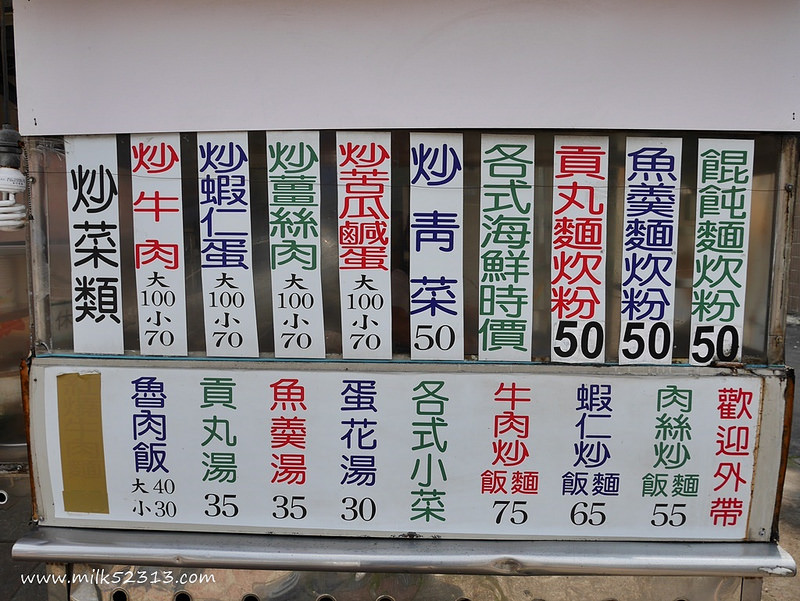
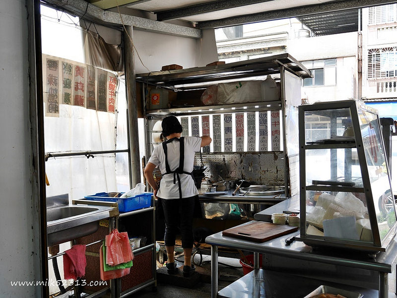
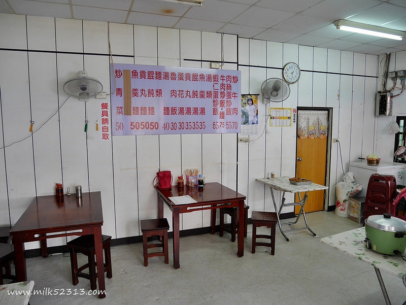
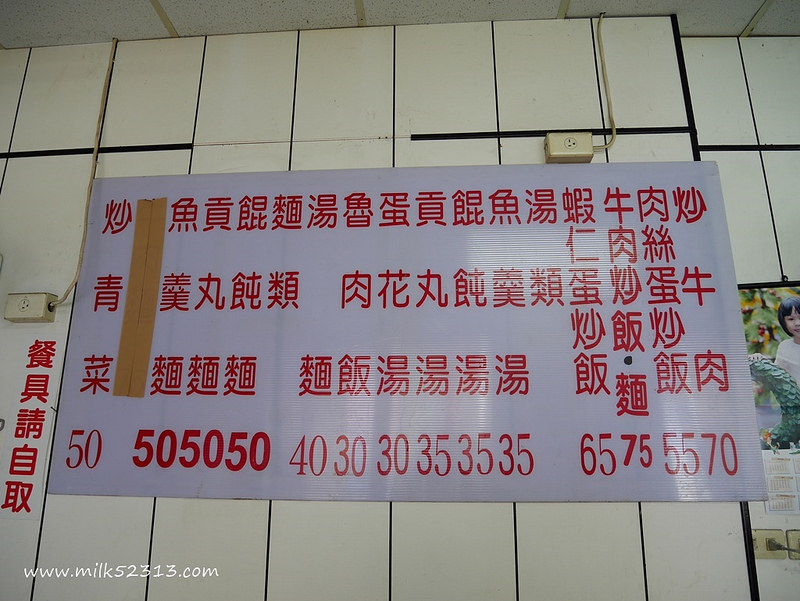
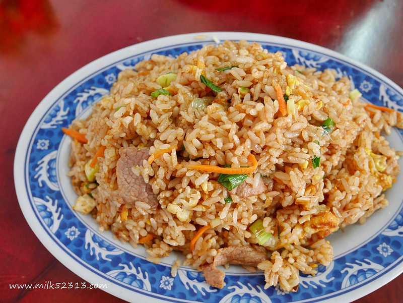
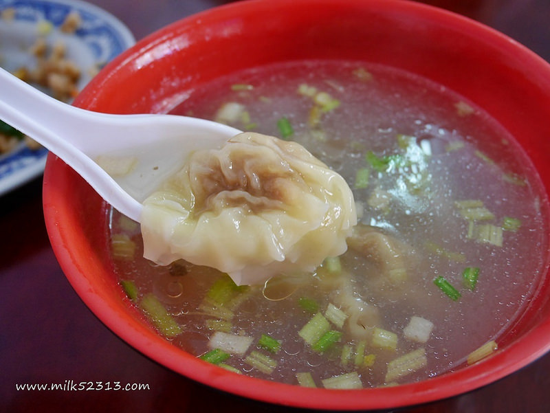
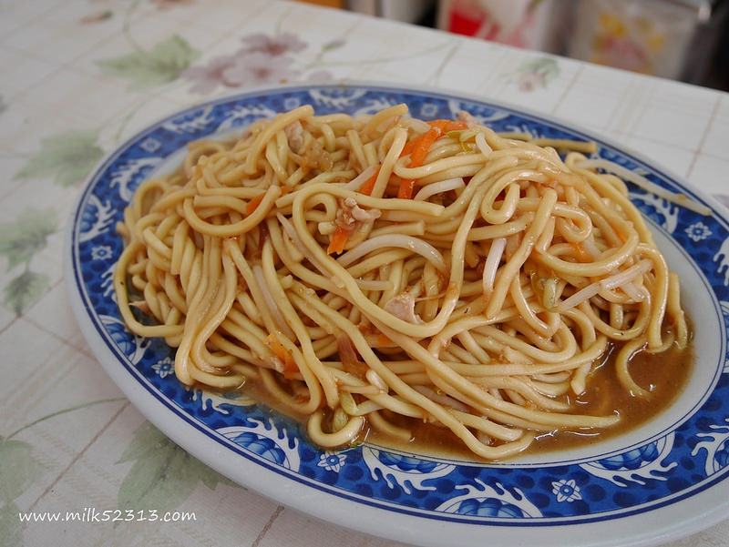
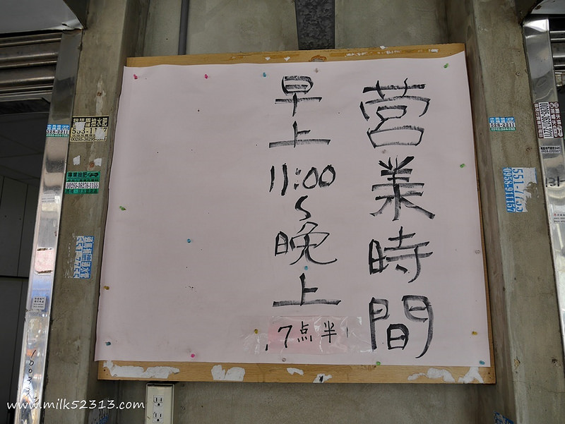

不少人跟我分享餐車老闆的媽媽在竹蓮寺對面有開店，可以去吃吃看 讓我想到賢哥曾經跟我說餐車炒飯之前是一對老夫妻在做，後來才換成年輕的炒 二話不說趕緊到竹蓮寺去尋找老夫妻的店！ 我們並不知道網友分享的確切店名跟地址，是看到這間菜單跟餐車頗像才鼓起勇氣詢問 耶耶賓果～好幸運的被我們找到了，老闆娘知道我們是特地來也被感動了 老闆娘說之前他們夫妻倆在經營餐車，做了十幾年，長期熬夜身體都搞壞 才慢慢交棒給兒子跟媳婦，目前餐車負責炒的就是媳婦 老夫妻在過年期間有幫忙餐車一段時間，就是那時候被賢哥吃到老闆娘的炒飯 一吃就愛上了！雖然媳婦的手藝不比老闆娘，但也是傳承下去的好口味 餐車交棒下去後，自己就在竹蓮寺對面開店，從中午11點賣到晚上7點半
位於竹蓮寺對面，一間公益彩券行的旁邊，掛著「廟口三十年老店」的小招牌
菜單比餐車要豐富一些，有些許不同
目前是老闆娘一個人經營店面，假日人潮多先生才會幫忙 阿姨很可愛的自嘲，現在是自己做興趣跟打發時間的 有時候忙起來會等比較久，顧客也都會體恤老闆娘願意等待、還會幫忙算錢之類的
店內座位不多，加上這邊本來就不方便停車，還是比較建議外帶
種類比餐車要豐富一些，價格也稍微不同 店面這邊沒有海產湯跟蛤仔湯，改成比較方便的貢丸湯、魚羹湯、餛飩湯
老闆娘知道我們特地來找，感動到幫我們加量，真是拍謝 吃了一口，覺得餐車的炒飯口味比較重一點，也比較油 阿姨炒的比較乾，可以吃到更粒粒分明的口感和蛋香，牛肉很滑嫩 如果說餐車炒飯是好吃，這間就是超級好吃啦
阿姨端上桌後請我們自己加胡椒粉，但其實不加就很有味道了 喝完也不會口乾舌燥 餛飩不是走大顆路線，但是小而巧，滑溜好吃
這是牛牛偷拍隔壁桌點的炒麵XD，看起來還不錯
引自:http://milk52313.pixnet.net/blog/post/447515582